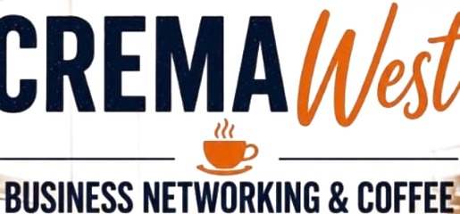
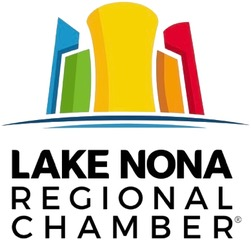
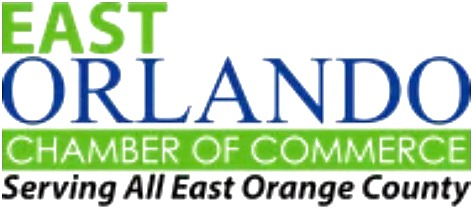
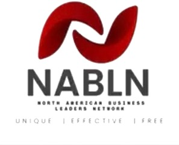
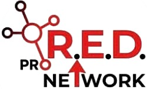
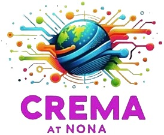
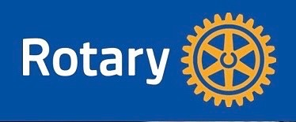
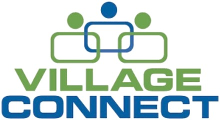

Business scaling
Clarify the growth model, remove bottlenecks, strengthen leadership and build a company that is less dependent on its owner.
Business Scaling & Practical AI
Genysis IQ helps owners build the systems, processes, leadership structure and intelligent technology required to grow without remaining the center of everything.
Built for established businesses that have outgrown the systems that got them here — typically $500K to $5M in revenue with a small operating team.
What we solve
Revenue can rise faster than structure. We help owners replace improvisation with an operating model that can carry the next stage of growth.
Clarify the growth model, remove bottlenecks, strengthen leadership and build a company that is less dependent on its owner.
Turn tribal knowledge into repeatable workflows, accountability, documented standards, scorecards and an operating rhythm.
Identify and deploy third-party AI tools that measurably improve productivity, customer experience, sales, service and decision-making.
Chaos to scale
Owner-dependent companies look like office #1. Systems-driven companies look like office #2.
Genysis IQ — transforming chaos into a scalable asset.

From Chief Everything Officer to Chief Executive Officer
When the owner is the approval process, the problem solver, the salesperson, the escalation point and the institutional memory, growth eventually stalls. We redesign the business around systems and people instead of owner dependency.
The Genysis IQ method
Six stages that move a company from understanding its real constraint to building the architecture, systems, measurement and repeatability that scale needs.
Find the real constraint, the target and the growth objective.
Design roles, structure, decision flow and the operating model.
Create the tools and management systems that support execution.
Build repeatable workflows and documented standards.
Measure performance with practical KPIs and feedback loops.
Make successful execution transferable and scalable.
Proof
The energy organisation Ron built — and the operating system that became CASPER.
Read the case study US Market entry for an international product companyTraining academy, sales systems and a domestic manufacturing path when tariffs hit.
Read the case study 1→team Owner-dependency ceiling, brokenAdding staff, a larger office, and responsibility finally distributed beyond the owner.
Read the case studyBefore you call
The clearest test is what happens when sales go up. If more revenue makes the business worse — longer delivery times, more mistakes, more hours from you — you have a scaling problem, and more leads will make it worse. Most owners who come to us assumed they had a sales problem.
Established businesses that have outgrown the systems that got them here — typically $500K to $5M in revenue with a small operating team. Below that, the constraint is usually still sales. Well above that, you generally have internal operations leadership already.
No. We are a business consultancy that happens to be good at technology, not an AI company looking for places to put AI. Plenty of the highest-return work we do involves no AI at all. Where it genuinely removes work we will say so — and where it is a distraction from the actual constraint, we will say that too.
A fractional COO runs your operations. We build the operating system so the business needs less running. If what you actually need is a full-time operator, we will tell you that.
Two minutes, no email
Answer ten questions and get a scaling readiness score out of 100, plus the constraint most likely holding the business back.
Ready for the next level?
Tell us where growth is getting stuck. We will help identify the bottleneck and the systems needed to move past it.
Community
We show up for the business community we serve — chambers, networking groups and service organizations across Central Florida and beyond.







